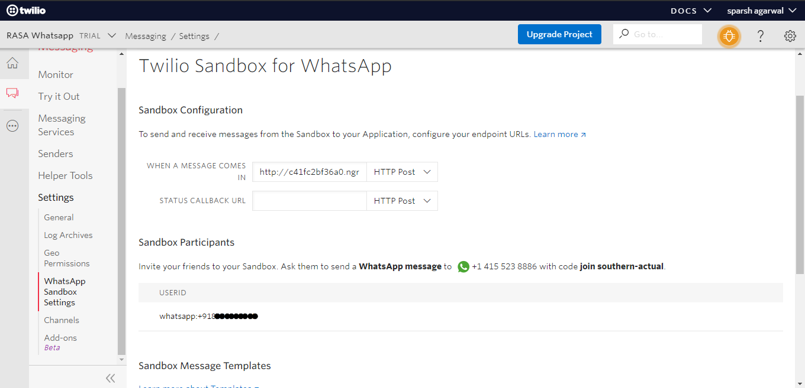

A bot that logs daily wellness data to a spreadsheet (using the Airtable API), to help the user keep track of their health goals. Connect the assistant to a messaging channel—Twilio—so users can talk to the assistant via text message and Whatsapp.
What you'll learn?
- RASA chatbot with Forms and Custom actions
- Connect with Airtable API to log records in the table database
- Connect with Whatsapp for user interaction
Why is this important?
- Bots are the future
- More and more users are starting using bots to get recommendations
How it will work?
- Buid chatbot in RASA
- Test the functionality using command line
- Connect to Twilio
- Connect to Whatsapp via Twilio
- Store responses in Airtable
Who is this for?
- People who are new in chatbots
- People looking to learn how chatbots work and suggest/assist users
Important resources




- Download the Airtable template and generate an Airtable API token. You'll also need to locate your Table Name and Base ID, which can be found in the Airtable API docs.
- Make a copy of the
.example-envand rename it.env. Add your Airtable API token, Base ID, and Table Name to the file. - Install Rasa Open Source: https://rasa.com/docs/rasa/user-guide/installation/
- Install the action server dependencies:
pip install -r requirements-actions.txt - Train the model:
rasa train - Open a second terminal window and start the action server:
rasa run actions - Return to the first terminal window and start the assistant on the command line:
rasa shell
Congratulations!